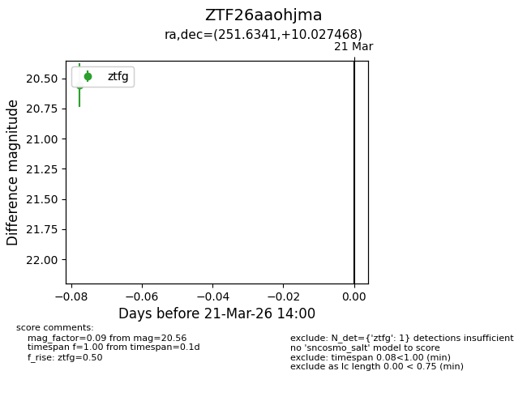
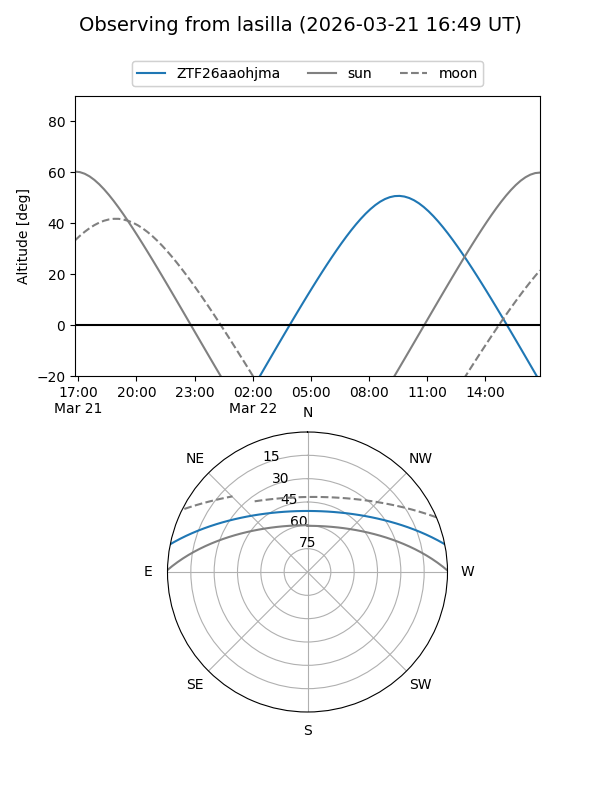
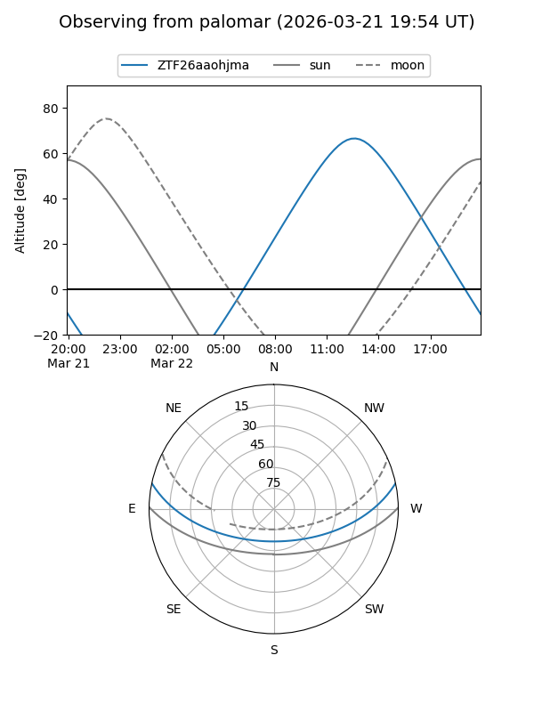

ZTF26aaohjma
Target ZTF26aaohjma at 2026-03-21 14:02
Aliases and brokers:
FINK: link
Lasair: link
ALeRCE: link
alt names
ZTF26aaohjma (ztf,fink_ztf)
Coordinates:
equatorial (ra, dec) = 251.6341,+10.02747
equatorial (HMS+DMS) = 16:46:32.17,+10:01:38.89
galactic (l, b) = (27.6527,+32.25741)
Flags:
Photometry:
last ztfg=20.56
1 ztfg detections
Lightcurve

Visibility


Additional plots